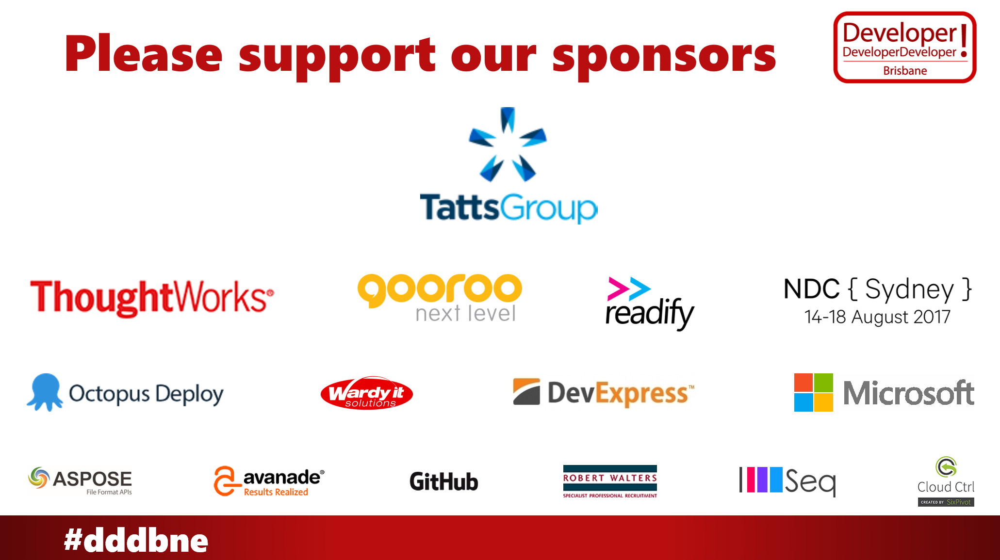
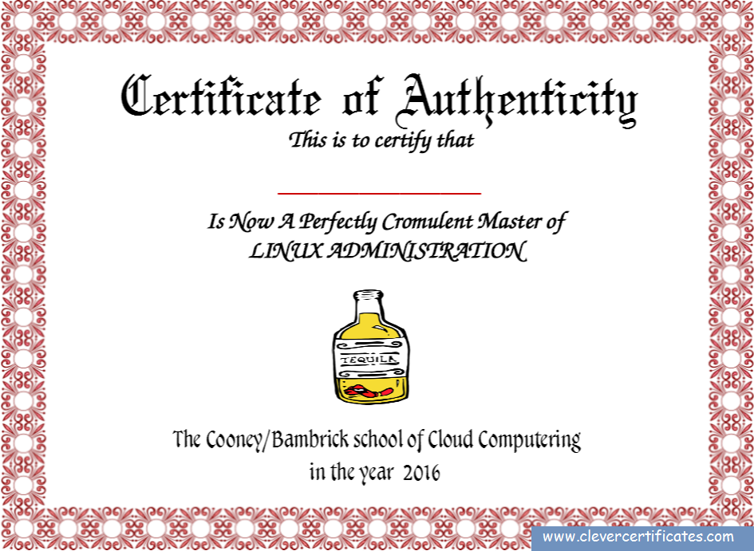
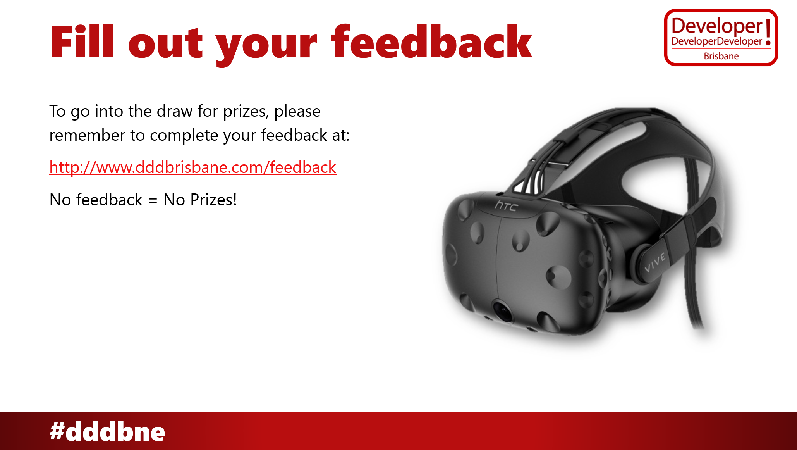

# Asp.net core on LINUX
## it's the future
## let's dive right in!

## Ballmer, 2001:
> "Linux is a cancer"
## Ballmer, 2001:
> "Linux is a cancer"
## Ballmer, 2016:
> "I may have called Linux a cancer but now I love it"
["I may have called Linux a cancer but now I love it"](http://www.zdnet.com/article/ballmer-i-may-have-called-linux-a-cancer-but-now-i-love-it)

## What changed?
# Azure
## Desktop Sales ↓
## Cloud Services ↑
Before Azure:
> Windows Server is the best thing for data centers!
After Azure:
> Here's Windows Server Core... best thing for data centers!
More Azure:
> Here's Windows Server Nano... best thing for data centers!
Today...
> We offer Linux!
## join the dots
# Microsoft is a Linux company
## Inevitable conclusion
# MS Stuff and Linux
- dotnet core
- visual studio code
- SQL Server 2016
- Service Fabric
- PowersHell
- Ubuntu on Windows 10
- Linux Azure VMs
- Silverlight for Lynx
# Why does it benefit you today?
* opens you up to a larger ecosystem
* microservices with less friction
* scaling without license problems
* drastically cheaper hosting

# The old architecture

# The new architecture


**WOAH!** Lots of differences! An overwhelming number of changes. But think of all the things we've thrown away. IIS! No more IIS. Phew! No more application pools. No more terminal services. Let's take a closer look
If it feels daunting -- if you feel that "I SUCK" feeling -- then that's great! It means you're learning! It's the mental equivalent of the gym saying 'no pain no gain.' And it's amazing how quick you'll get past those initial feelings. You run each of the commands in this tutorial 2 or 3 times on your own -- you'll start to feel veeeery comfortable with it. You can acclimatize to this very quickly. It's all just typing!
There's going to be a *lot* of terminology thrown at you during this talk. It's all online at {TODO: some simple url} where it's described in a lot more detail, with links you can follow and everything -- so for now i suggest you just sit back, let it all wash over you, and you can check up on it all later if you're super keen.
(image: pepe silvia scene from "it's always sunny in philadelphia")
# The new architecture

There's a finite number of boxes there... nginx, Kestrel, supervisor, SSH, fail2ban... we'll go through each of those, carefully, and then you'll be able to put Linux on your resume. Ok there's a few concepts we'll need to cover along the way.
# Demonstration * See [script for demo](demo/scripts.md) Demo as animated gifs... * [create droplet](ScreenToGif_Files/CreateDroplet.gif) * [configure droplet](ScreenToGif_Files/ConfigureDroplet.gif) * [install .net core](ScreenToGif_Files/InstallDotNetCore.gif) * [hello world](ScreenToGif_Files/HelloWorld.gif) * [web app](ScreenToGif_Files/WebApp.gif) Documentation: * Configure droplet: [https://www.digitalocean.com/community/tutorials/initial-server-setup-with-ubuntu-16-04](https://www.digitalocean.com/community/tutorials/initial-server-setup-with-ubuntu-16-04) * [An Introduction to Securing your Linux VPS (Digital Ocean)](https://www.digitalocean.com/community/tutorials/an-introduction-to-securing-your-linux-vps) * [7 Security Measures to Protect Your Servers (Digital Ocean)](https://www.digitalocean.com/community/tutorials/7-security-measures-to-protect-your-servers) * [Asp.net Core Publish to a Linux Production Environment (Microsoft)](https://docs.microsoft.com/en-us/aspnet/core/publishing/linuxproduction) * [Hanselman: Publishing an ASP.NET Core website to a cheap Linux VM host](http://www.hanselman.com/blog/PublishingAnASPNETCoreWebsiteToACheapLinuxVMHost.aspx) * get a VM at digitalocean, US$5 per month. ...or scaleway 3 euro per month, or linode, or amazon (AWS free tier... 1 year free), or arubacloud.com (1 euro per month) or others... Go there, sign up, and get a machine in the cloud.
# Demonstration
## configure droplet
setup the machine (this will take many steps)
- apt-get, we'll use that early on
- root/sudo
- create new user who is not root
- give new user sudo privileges
- test new user in separate SSH windows
- includes testing sudo
- stop root user from being usable
- stop password based logins from being allowed
- configure fail2ban
# Windows Admin in One Slide

# Linux Admin in One Slide

# Linux Admin in One Slide


This is how you achieve a least privilege yet powerful super user on linux: with sudo. It's basically simon says. you type sudo {command}, and then it asks you for your password. So you want a long but easy to type password -- recommend a passphrase!
Bash v cmd.exe:
Similarities
| windows | bash |
|---|---|
cd .. | cd .. |
cd \ | cd / |
dir | ls |
copy | cp |
del | rm |
rd | rmdir |
cls | clear |
type {file} | cat {file} |
| (pipe) | | (pipe) |
stdin, stdout, stderr | stdin, stdout, stderr |
Bash v cmd.exe:
Differences
- case sensitive!
- file extensions: not relevant.
- "dot" prefix on a file: hides the file
- no drive letters. "mount" a device into a location.
- "~" means your home path. "cd" with no parameters takes you home.
- everything is a file:
- streams
- stdin, stdout, stderr,
- devices... are all files.
Bash v cmd.exe:
Other Common Things
.profile grep tail top editing config files managing processes
# Demonstration
## install .net core
[https://www.microsoft.com/net/core#ubuntu](https://www.microsoft.com/net/core#ubuntu)
* install .net core
* instructions at asp.net [https://www.microsoft.com/net/core#ubuntu](https://www.microsoft.com/net/core#ubuntu)
sudo sh -c 'echo "deb [arch=amd64] https://apt-mo.trafficmanager.net/repos/dotnet-release/ xenial main" > /etc/apt/sources.list.d/dotnetdev.list'
sudo apt-key adv --keyserver apt-mo.trafficmanager.net --recv-keys 417A0893
sudo apt-get update
sudo apt-get install dotnet-dev-1.0.0-preview2-003131
# Demonstration
## hello world
mkdir testapp
cd testapp
dotnet new
dotnet restore
dotnet run
# Demonstration
## hello web
build test web app...
dotnet new -t web
But how to see it working?
can't very well visit localhost...
* can curl / wget ...
* but how to SEE the website...
Either:
* Get Kestrel to listen on all IP addresses: dotnet run --hosturl http://0.0.0.0:80
* but it explicitly says not to do that in the documentation:
Kestrel is designed to be run behind a proxy (for example IIS or Nginx)
and should not be deployed directly facing the Internet.
(http://docs.asp.net/en/latest/fundamentals/servers.html#choosing-a-server)
* Set up a reverse proxy between public internet and your app
> A reverse proxy-server can allow you to offload work like serving static content, caching requests, compressing requests, and SSL termination from the HTTP server. The reverse proxy server may reside on a dedicated machine or may be deployed alongside an HTTP server.
>
> [Publish to a Linux Production Environment](https://docs.microsoft.com/en-us/aspnet/core/publishing/linuxproduction)
# Kestrel
## Tech Empower Benchmarks
# Kestrel
## Tech Empower Benchmarks
> Thanks to Microsoft’s herculean performance tuning effort, ASP.NET—in the new cross-platform friendly form of ASP.NET Core—is now a top performer in our Plaintext test, making it among the fastest platforms at the fundamentals of web request routing. The degree of improvement is absolutely astonishing, going from 2,120 requests per second on Mono in Round 11 to 1,822,366 requests per second on ASP.NET Core in Round 13. That’s an approximately **85,900%** improvement
[TechEmpower Blog - Round 13](https://www.techempower.com/blog/2016/11/16/framework-benchmarks-round-13/)
# Demonstration
## nginx
What is nginx? it's a webserver. A big proper battle hardened webserver.
- install nginx
- configure nginx to act as a "reverse proxy"
- /etc/nginx/nginx.conf and /etc/nginx/sites-enabled/
TEST: can now see site from the internet...
# Demonstration
## supervisor
- install supervisor
it's like the service manager in windows. It's job is to keep things running.
- configure supervisor
On start up of the machine, it will start your webapp.
If your web app falls over, supervisor will start it up again.
sudo service supervisor stop
sudo service supervisor start
sudo tail -f /var/log/supervisor/supervisord.log
#and the application logs if you like
sudo tail -f /var/log/dotnettest.out.log
TEST: app now runs all the time...
# Demonstration
## back on windows
* create app on your local windows machine
* Can run it from visual studio.
* Or can run it from the console:
dotnet run
# Demonstration
## deploy from windows
* create deployment version
dotnet publish
* upload it using sftp
* can use other techniques too:
* "scp" (secure copy)
* git push/pull
* docker container
* run it in the console, to see if it works.
dotnet `yoursite.dll`
* run it via supervisor...
* if it's already running via supervisor, then you need to restart the app...
ps x | grep dot
sudo kill 1234
# Revisit...


If you take a photo of this slide and put it in your CV, you can ride the cash cow on the back of the gravy train until the golden goose lays a license to print money all the way to eldorado, etc.
References
Tod and Jakob
Workshop - An Introduction to .NET Core on Linux & Docker

